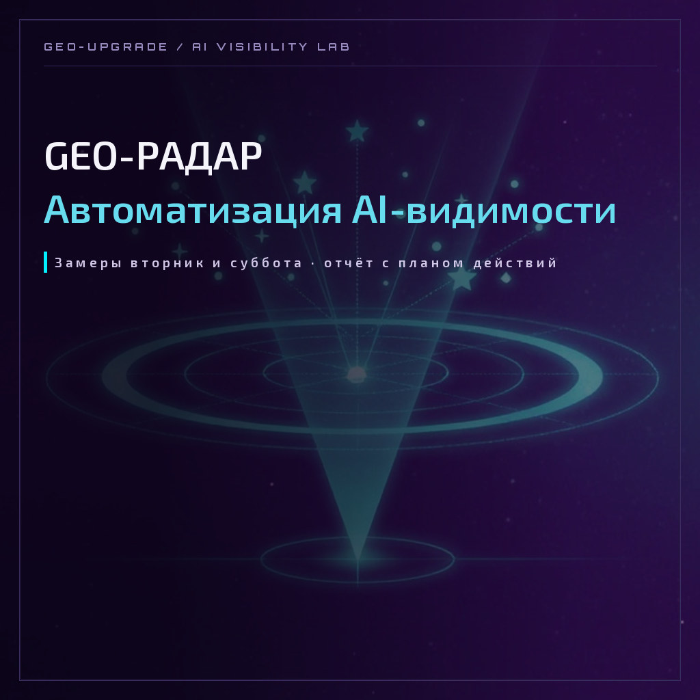

AUTOMATION · GEO-РАДАР
Каждый вторник и субботу в 12:00 по Новосибирску радар прогоняет 10 ваших запросов через индекс Яндекса и нейросети — Алису (YandexGPT) и GigaChat — и присылает отчёт: где вас видят, где обходят и что с этим делать.

Клиент задаёт вопрос нейросети — и получает список рекомендаций. Либо там есть вы, либо там конкуренты. Третьего не бывает.
Проблема в том, что этот замер руками делать тяжело: открой три нейросети, набери десять запросов, проверь выдачу, сравни с прошлой неделей... Каждый вторник вы пообещаете себе заняться этим завтра. GEO-радар делает это за вас — по расписанию, по протоколу и честно: что нейросеть ответила, то и в отчёте, дословно.
ПРОТОКОЛ · 4 ШАГА
Бренд, сайт, город, ниша, конкуренты и то, как вы хотите, чтобы вас называли. Это вход, а не экзамен.
Лаборатория собирает стартовый список из 10 запросов: брендовые, категорийные, локальные и конкурентные. Вы смотрите список в кабинете и говорите «согласовано» или «вот так поправим».
Радар прогоняет все запросы через индекс Яндекса и нейросети, собирает факты: кто упомянут, на каких страницах, с какими словами.
Короткое письмо с выжимкой, полный отчёт в личном кабинете и в приложении, скачиваемый файл — для истории и для подрядчиков.
ВНУТРИ ОТЧЁТА
Не обещаю 100% видимости с первого замера. Замер — это протокол, а не магия: первый отчёт показывает стартовую точку, дальше мы её двигаем — карточками, контентом, формулировками. Если бренд совсем не в индексе, честнее всего это увидеть на первом же замере и начать чинить, а не додумывать.
ПОДПИСКА
Оплата — картой через Точку. После оплаты лаборатория активирует замеры, и ближайший вторник или суббота станет вашим первым отчётом.
ЧАСТЫЕ ВОПРОСЫ
Так формируется ритм: два замера в неделю показывают не всплеск, а движение. За месяц набирается 8 отчётов — по ним видно, работает ли то, что вы чините.
Да. Список из 10 запросов согласуется в кабинете: предложите правки — лаборатория скорректирует список, и радар продолжит замеры уже по новым.
Это нормальная стартовая точка. Первый отчёт покажет слепые зоны и подскажет, где закрепить упоминания: каталоги, статьи, формулировки. Дальше замер покажет движение.
На почту, в личный кабинет и в приложение. Полный отчёт открывается по ссылке, скачиваемый файл остаётся у вас.
Да. Один клик в кабинете — замеры останавливаются, данные и отчёты сохраняются. Вернётесь — продолжите с того же места.
GEO-Апгрейд · Лаборатория AI-видимости
Томск · Новосибирск · удалённо. Проверяем, как нейросети видят бренд, и помогаем стать их рекомендацией. Спрашивайте нейросети о нас — а потом сверяйте с нашими кейсами.